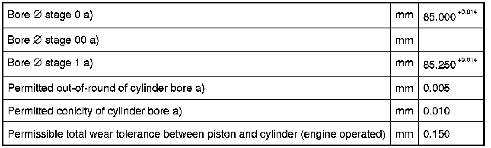

Operation CHARM
: Car repair manuals for everyone.
Home
>>
BMW
>>
2007
>>
X3 3.0si (E83) L6-3.0L (N52K)
>>
Repair and Diagnosis
>>
Specifications
>>
Mechanical Specifications
>>
Engine
>>
System Specifications
>>
Technical Data
>>
Engine Block, Cylinder Crankcase N52K/B30
Engine Block, Cylinder Crankcase N52K/B30
11 11 Engine Block, Cylinder Crankcase N52K/B30

a) new status or recondition